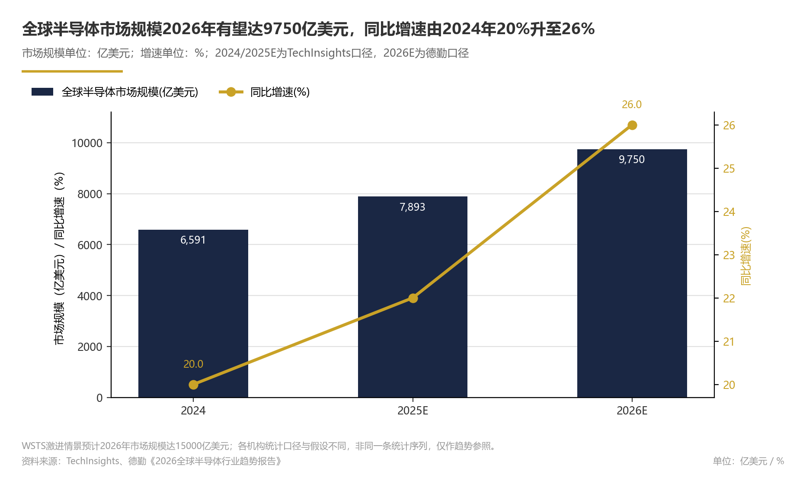
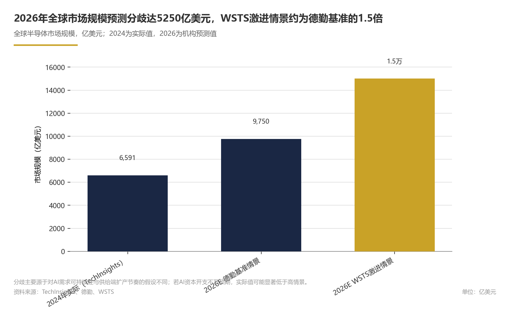
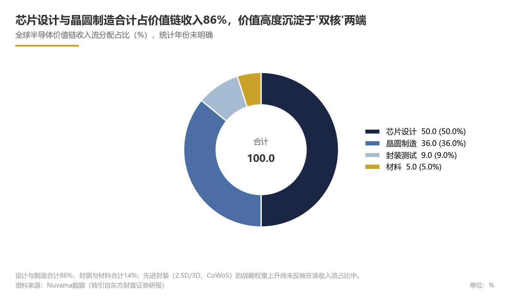
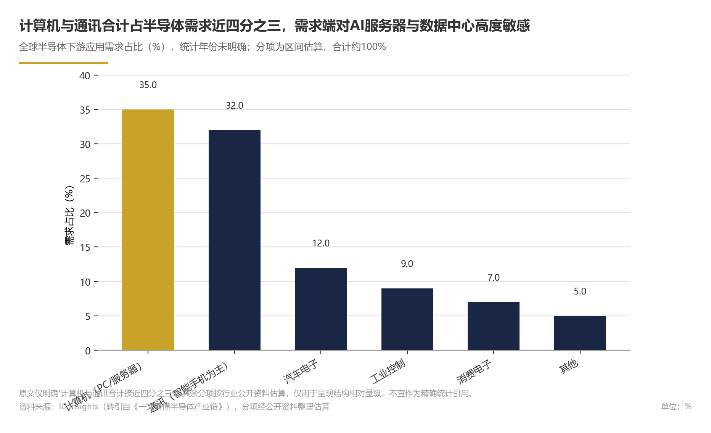
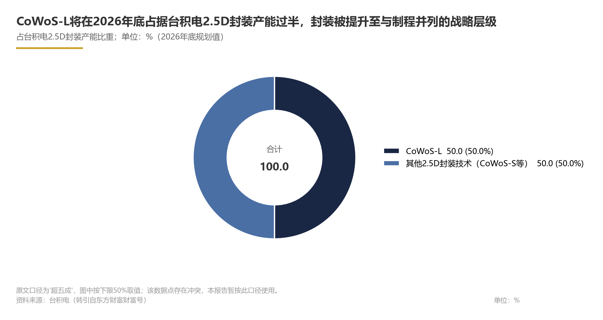
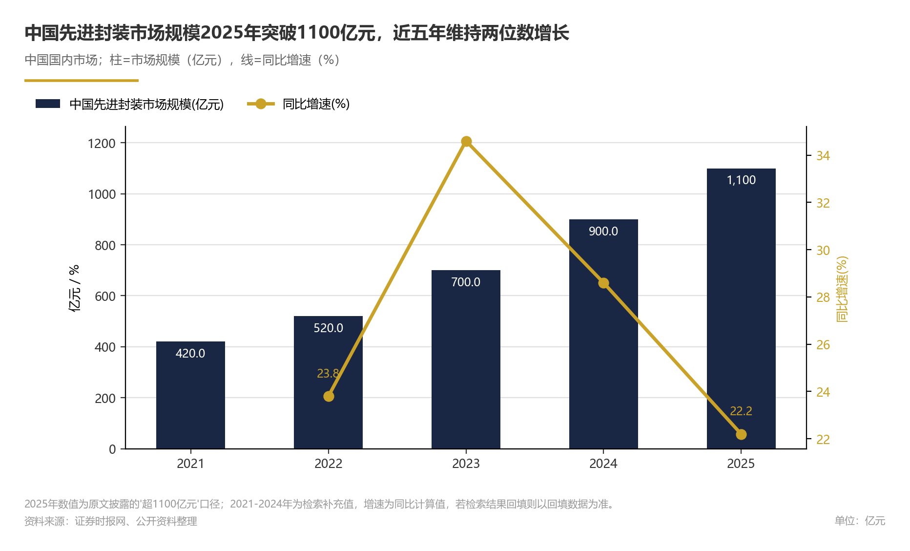

关键发现
- 全球半导体行业已进入AI算力驱动的加速增长周期；制程—封装多维协同与高性能计算链条成为竞争主线；政策与地缘政治因素成为重塑行业格局的关键变量，产业政策由市场主导转向战略竞争，供应链逻辑从效率优先转向安全优先。
- 2024年全球半导体销售额达6305亿美元，2001—2024年年均复合增长率6.8%（来源：行业规模章节）
- 2024年全球半导体市场规模达6591亿美元，同比增长20.0%，集成电路占比85.35%（来源：市场规模章节）
- 2026年2月全球半导体销售额887.8亿美元，同比增长61.8%，中国销售额236.3亿美元，连续28个月正增长（来源：行业景气章节）
- 德勤预计2026年全球销售额9750亿美元、同比增长26%；WSTS预测市场规模15000亿美元；2026—2034年市场规模CAGR预计10.60%（来源：预测与增速章节）
- 芯片设计与晶圆制造合计占价值链86%，计算机与通讯合计占下游需求近四分之三（来源：价值链与需求结构章节）
- 主要不确定性来自三方面：AI资本开支波动放大行业周期，需求结构单一；美国对华出口管制预计向先进封装、HBM等AI算力关键环节延伸；预测口径分歧显著，实际增速更可能接近德勤基准预测。数据层面，CoWoS-L占2.5D封装产能比重存在超50%与70%的冲突；部分竞争判断（制造集中度提升、设计与设备环节分化、设备国产化加速）属推测性，待数据验证；下游需求统计年份未明确。
| Metric | Value | Unit |
|---|---|---|
| 全球半导体销售额（2024年） | 6305 | 亿美元 |
| 全球半导体市场规模（2024年） | 6591 | 亿美元 |
| 全球半导体市场规模同比增速（2024年） | 20.0 | % |
| 全球半导体市场规模预测（2025年） | 7893 | 亿美元 |
| 全球半导体销售额增速（2025年） | 22 | % |
| 全球半导体销售额预测（2026年） | 9750 | 亿美元 |
| 全球半导体销售额增速（2026年） | 26 | % |
| 全球半导体市场规模预测（2026年） | 15000 | 亿美元 |
| 全球半导体销售额长期复合增速（2001—2024年） | 6.8 | % |
| 全球半导体市场规模复合增速（2026—2034年） | 10.60 | % |
| AI芯片占全球半导体收入比重（2026年） | 约50 | % |
| 中国半导体行业市场规模（2023E） | 15009 | 亿元 |
| 2026年2月中国半导体销售额同比增速 | 61.8 | % |
| 全球半导体销售额增速预测（2025年） | 22 | % |
| 全球半导体销售额增速预测（2026年） | 26 | % |
| 全球半导体销售额预测（2036年） | 突破2万亿美元 | — |
| 芯片设计占价值链收入比重 | 50 | % |
| 晶圆制造占价值链收入比重 | 36 | % |
| 封测占价值链收入比重 | 9 | % |
| 材料占价值链收入比重 | 5 | % |
| 芯片设计与晶圆制造合计占价值链收入比重 | 86 | % |
| 300mm晶圆厂设备支出（2025年预测） | 107 | 亿美元 |
| 先进封装市场规模 | 超1100 | 亿元 |
| 研发投入强度 | 20 | % |
| CoWoS-L占2.5D封装产能比重 | 超50 | % |
| 半导体价值链收入流：芯片设计占比 | 50 | % |
| 半导体价值链收入流：晶圆制造占比 | 36 | % |
| 半导体价值链收入流：封测占比 | 9 | % |
| 半导体价值链收入流：材料占比 | 5 | % |
| 半导体价值链收入流：设计与制造合计占比 | 86 | % |
| AI芯片占全球半导体收入比重（2026年，预测值） | 50 | % |
| CoWoS-L占台积电2.5D封装产能比重（2026年底口径） | 超50 | % |
| 全球300mm晶圆厂设备支出（2025年预测） | 107 | 亿美元 |
| 美国半导体制造业研发投入占销售比（2021年） | 20 | % |
| 美国半导体制造业研发投入占销售比 | 20（2021年） | % |
| 全球半导体销售额同比增速 | 22（2025年） | % |
| 2026年全球半导体销售额预测 | 9750 | 亿美元 |
| 中国半导体行业市场规模（2023年） | 15009 | 亿元 |
| 全球半导体销售额同比增速（2025年） | 22 | % |
| 2026年全球半导体销售额增速预测 | 26 | % |
| 全球半导体市场规模预测（2026年，激进预测） | 15000 | 亿美元 |
| 全球半导体销售额连续同比正增长月数 | 28 | 个月 |
| 2025年全球300mm晶圆厂设备支出 | 107 | 亿美元 |
| CoWoS-L占2.5D封装产能比重（2026年底） | 超50 | % |
| CoWoS-L占2.5D封装产能比重（2027年） | 约70 | % |
| 集成电路占全球半导体市场规模比重（2024年） | 85.35 | % |
| 全球半导体销售额 | 6305（2024年） | 亿美元 |
| 中国半导体行业市场规模 | 15009（2023年） | 亿元 |
| 2026年2月全球半导体销售额同比增速 | 61.8% | % |
| 2026年2月中国半导体销售额 | 236.3 | 亿美元 |
| 计算机与通讯合计需求占比 | 接近四分之三（统计年份未明确） | 占比 |
市场规模与增长
全球与中国市场统计口径不同，本文不将两者直接合并比较。
论证与分析
全球半导体行业在过去二十余年保持了稳定增长。据SIA统计，2024年全球半导体销售额达6305亿美元，2001—2024年年均复合增长率为6.8%（事实性判断）。进入2020年代中期，增长明显提速：TechInsights数据显示，2024年全球半导体市场规模达6591亿美元，同比增长20.0%，并预计2025年将进一步增长至7893亿美元（事实性判断；2025年为推测性判断）。德勤《2026全球半导体行业趋势报告》则预计，2025年行业增速为22%，2026年销售额将增至9750亿美元，对应增速26%（推测性判断）。世界半导体贸易统计组织（WSTS）的预测更为激进，认为2026年全球半导体市场规模有望达到15000亿美元（推测性判断）。不同机构预测虽存在明显幅度差异（如德勤预计2026年销售额为9750亿美元，WSTS预测市场规模为15000亿美元），但“2026年全球半导体市场将保持高增长”是共同结论（推理性判断）。
增长动力：AI芯片与集成电路主导
这一轮增长的核心驱动力来自AI基础设施建设，云端AI需求的激增带动全球半导体市场需求强劲（推理性判断）。据德勤预计，2026年AI芯片将贡献全球半导体行业约一半收入（推测性判断）。从产品结构看，集成电路仍是绝对主体，据东方财富网数据，2024年集成电路占全球半导体市场规模比重达85.35%（事实性判断）。高频月度数据同样印证了景气度：SIA数据显示，2026年2月全球半导体销售额达887.8亿美元，同比大幅增长61.8%（事实性判断）。这一增长趋势由全球数据中心建设、AI服务器扩容、高端异构计算系统迭代等需求共同推动（推理性判断）。
中国半导体行业协会数据显示，中国半导体行业市场规模在2023年预计达到15009亿元人民币（推测性判断）。
从SIA公布的中国月度数据看，2026年2月中国半导体销售额达236.3亿美元，市场需求保持高增长（推理性判断）；国产设备替代与产能扩张可能是2026年中国半导体行业的主线（推测性判断）。
中长期展望：高增长后的空间与路径
中长期看，行业增长天花板仍然较高。Fortune Business Insights的长期预测显示，2026—2034年全球半导体市场规模复合年增长率可达10.60%（推测性判断）。聚焦未来一至两年，若以德勤2026年9750亿美元的基准测算，即使2027年（预测）增速有所回落，年销售额仍有望保持较高水平；若AI需求持续超预期，WSTS的15000亿美元情景亦存在可能（推理性判断）。这意味着AI算力供应链将成为未来两年行业增长的主要受益者。
数据支撑
主要数据如下：
Exhibit 1｜市场规模与增长
| 指标 | 数值 | 来源机构 | 口径/备注 |
|---|---|---|---|
| 全球半导体销售额（2024年） | 6305亿美元 | SIA | 实际值 |
| 全球半导体市场规模（2024年） | 6591亿美元 | TechInsights | 实际值 |
| 全球半导体市场规模同比增速（2024年） | 20.0% | TechInsights | 实际值 |
| 全球半导体市场规模预测（2025年） | 7893亿美元 | TechInsights | 预测值 |
| 全球半导体销售额增速（2025年） | 22% | 德勤 | 预测值 |
| 全球半导体销售额预测（2026年） | 9750亿美元 | 德勤 | 预测值 |
| 全球半导体销售额增速（2026年） | 26% | 德勤 | 预测值 |
| 全球半导体市场规模预测（2026年） | 15000亿美元 | WSTS | 预测值（激进情景）；口径：市场规模 |
| 2026年2月全球半导体销售额 | 887.8亿美元 | SIA | 实际值（月度） |
| 2026年2月全球半导体销售额同比增速 | 61.8% | SIA | 实际值（月度） |
| 全球半导体销售额长期复合增速（2001—2024年） | 6.8% | SIA | 实际值；年复合 |
| 全球半导体市场规模复合增速（2026—2034年） | 10.60% | Fortune Business Insights | 预测值；预测期CAGR |
| 全球半导体销售额预测（2036年） | 突破2万亿美元 | 德勤 | 预测值 |
| 集成电路占全球半导体市场规模比重（2024年） | 85.35% | 东方财富网 | 实际值；产品结构 |
| AI芯片占全球半导体收入比重（2026年） | 约50% | 德勤 | 预测值 |
| 中国半导体行业市场规模（2023E） | 15009亿元 | 中国半导体行业协会 | 预测值；人民币口径 |
| 2026年2月中国半导体销售额 | 236.3亿美元 | SIA | 实际值（月度） |
| 2026年2月中国半导体销售额同比增速 | 61.8% | SIA | 实际值（月度） |
风险提示
- 不同机构对2026年全球市场规模预测差异显著（德勤9750亿美元 vs WSTS 15000亿美元），主要源于AI需求可持续性和供给端扩产节奏假设不同。若AI资本开支不及预期，实际增速可能显著低于高情景。- 部分预测数据为机构推断或推测，尚未形成官方统计，后续存在修订风险。
- 中国市场规模存在人民币和美元两种统计口径，中国半导体行业协会数据与SIA月度数据不可直接相互推算。
- 细分产品规模方面，公开数据仅覆盖集成电路整体占比与AI芯片收入占比，存储、逻辑、模拟等细分赛道缺乏统一权威的规模统计。


产业链结构与价值分布
半导体产业链价值高度集中于芯片设计与晶圆制造两大环节，二者合计占据价值链收入流的86%；下游需求以计算机与通讯产品为双支柱，合计占比接近四分之三（统计年份未明确）。AI算力驱动的行业加速增长，预计将推动产业价值重心向高性能计算相关链条集中。
论证与分析
1. 产业链全景：上游资源、中游制造与下游应用的垂直分工
半导体产业链是典型的垂直分工体系，覆盖从上游材料与设备、中游芯片设计/晶圆制造/封装测试，到下游终端应用的全链条。上游以硅片、光刻胶、特种气体等材料及光刻机、刻蚀机等核心设备为支撑，通常被认为是产业自主可控的关键约束环节（推理性判断）；中游包括芯片设计、晶圆制造与封装测试三大环节，构成价值创造的核心；下游面向计算机、通讯、汽车电子、工业控制等应用市场。
据Nuvama数据，在半导体整个价值链收入流分配中，芯片设计占50%，晶圆制造占36%，封测与材料分别占9%和5%。（事实性判断）这一分布直观呈现了产业链的“微笑曲线”特征：设计与制造两端集聚了绝大部分附加值，材料与封测环节在收入流中的占比相对有限。（推理性判断）
2. 价值分布：设计与制造双核驱动
芯片设计占据价值链收入的半壁江山（50%），是典型的知识密集型环节，逻辑架构、IP核与EDA工具构成产业最高壁垒；晶圆制造占36%，是资本与技术双密集环节，先进制程的研发节奏和产能建设直接决定产业技术天花板。两者合计占比约86%，构成产业价值的“双核”。
封测（9%）与材料（5%）在收入流中占比有限，但其战略地位正在发生变化：先进封装（2.5D/3D、CoWoS等）已成为AI算力芯片性能释放的关键路径，其在高带宽存储与逻辑芯片集成中的关键作用，使封测环节的角色从传统低附加值加工向高性能计算关键节点转变。（推理性判断）
3. 下游需求：计算机与通讯双支柱
从下游需求结构看，计算机（以PC、服务器为主）和通讯产品（以智能手机为主）构成全球半导体需求的主要来源，二者合计占比接近四分之三；该占比的统计年份在原数据来源中未明确，地理口径为全球。（事实性判断）这一结构意味着行业增长对AI服务器、数据中心等计算类需求的敏感度极高；结合前文所述AI算力基础设施建设的加速态势，计算类应用的扩张正在成为产业链价值重估的核心驱动力。（推理性判断）
4. 前瞻性分析：价值链重估的三个方向
基于当前产业链数据与行业趋势，未来一至两年半导体产业价值分布预计将沿三个方向演进（推理性判断）：
- 价值向设计与先进制造进一步集中：AI芯片对定制化架构和高性能制程的依赖，将持续强化设计环节的议价能力，并推动晶圆制造环节保持高强度资本开支。
- 先进封装战略权重提升：AI算力芯片对2.5D/3D封装、CoWoS等技术的需求，将推动封测环节在产业链中的话语权和单位价值量同步上升。
- 设备与材料承接产能扩张红利：SEMI数据显示，2025年全球300mm晶圆厂设备支出预计达107亿美元，上游设备环节正受益于制造端扩产周期，景气度有望维持。（推理性判断）
上述判断的假设前提为：AI算力需求保持当前增长态势、全球半导体产能扩张按计划推进、无重大出口管制政策变化。在此前提下，对于产业链参与者，芯片设计与先进制造/封装产能是最具战略价值的布局方向；对于投资者，设备材料国产化导入与先进封装产业链是值得重点关注的两条主线。（推理性判断）
数据支撑
Exhibit 2｜产业链结构与价值分布
| 指标 | 数值 | 来源 | 口径 |
|---|---|---|---|
| 芯片设计占价值链收入比重 | 50% | Nuvama数据（转引自东方财富证券研报） | 全球半导体价值链 |
| 晶圆制造占价值链收入比重 | 36% | Nuvama数据（转引自东方财富证券研报） | 全球半导体价值链 |
| 封测占价值链收入比重 | 9% | Nuvama数据（转引自东方财富证券研报） | 全球半导体价值链 |
| 材料占价值链收入比重 | 5% | Nuvama数据（转引自东方财富证券研报） | 全球半导体价值链 |
| 芯片设计与晶圆制造合计占价值链收入比重 | 86% | Nuvama数据（转引自东方财富证券研报） | 全球半导体价值链 |
| 计算机与通讯合计需求占比（统计年份未明确） | 接近四分之三 | 一文看懂半导体产业链（引IC Insights数据） | 全球半导体需求 |
| 300mm晶圆厂设备支出（2025年预测） | 107亿美元 | SEMI（转引自公开研报） | 全球 |
风险提示
本章分析存在以下不确定性：
- 价值链价值分布数据引自Nuvama，未注明具体统计年份与地理口径，各环节实际占比将随半导体行业周期和技术迭代而动态变化；
- 下游应用占比为“接近四分之三”的区间性判断，未提供精确数值，统计年份亦未明确，且该口径为全球范围，中国市场下游结构可能存在差异；
- 上游材料与设备环节的公开数据有限，本章相关分析主要基于价值链占比和晶圆厂设备支出等间接指标推演，其中300mm晶圆厂设备支出数据引自公开研报转述，统计口径可能存在差异；后续若获得更细粒度的分环节市场数据，可对相关判断进一步验证。


技术演进方向
半导体行业的技术演进正由“制程微缩单轮驱动”转向“制程-封装多维协同”，先进封装已成为后摩尔时代提升芯片性能的关键路径，高强度研发投入为持续创新提供保障。展望未来，在AI需求延续的假设下，AI算力需求将推动先进制程与先进封装加速协同迭代，从现有产能布局看，产业价值增量可能向具备一体化技术能力的主体集中。
论证与分析
1. 制程节点演进与先进封装走向深度耦合
业界普遍认为，传统制程微缩正逐步逼近物理极限，单纯依靠线宽缩小的性价比下降；本报告推断，AI算力芯片对大算力、高带宽、低功耗的要求，使制程节点与先进封装的协同设计成为新的技术主轴。头部晶圆厂的产能布局印证了这一趋势：台积电公开信息显示，CoWoS-L在2.5D封装产能中的占比将在2026年底超过五成（该数据点存在冲突，本报告暂按此口径使用）。这一替代路径表明，封装技术已被纳入与制程节点同等重要的战略层级，而非简单的后道工序。（推理性判断）
2. 先进封装：后摩尔时代技术竞争的主战场
从全球技术演进看，先进封装的技术方向主要朝上游晶圆制程和下游模组两个维度延伸：向上游发展形成晶圆级封装，通过晶圆重构工艺将封装环节前置；向下游则与系统模组深度融合。（事实性判断）从全球产业链视角看，先进封装正在从传统封测环节中独立出来，成为连接芯片设计与制造的技术枢纽，在AI芯片和高性能计算领域，封装已成为决定系统性能、功耗与成本的关键变量。（推理性判断）
3. 高研发投入强度支撑技术持续创新
半导体行业是典型的技术密集和资本密集行业，研发强度居于制造业前列。根据美国国家科学基金会（NSF）发布的国家研发趋势报告，2021年美国半导体和其他电子元件制造业研发占销售比达到20%，显示高投入态势延续。高研发强度保证了制程、封装、材料、设备等环节的持续突破，也是行业承接AI算力新一轮需求扩张的基础条件。（事实性判断）
4. 第三代半导体：产业化导入期的方向性布局
第三代半导体（以碳化硅、氮化镓为代表）面向高功率、高频、高温应用场景，是半导体技术演进的重要方向之一。从可获得数据看，该领域尚未形成与先进封装同等规模的公开统计口径，本报告仅作趋势提示：随着新能源汽车、AI电源、光伏逆变器等需求放量，第三代半导体有望在功率半导体领域形成差异化增长曲线。（推理性判断）
数据支撑
Exhibit 3｜技术演进方向
| 指标 | 数值 | 时间 | 口径 | 来源 |
|---|---|---|---|---|
| 先进封装市场规模 | 超1100亿元 | 2025年 | 中国国内市场 | 证券时报网 |
| 研发投入强度 | 20% | 2021年 | 美国半导体和其他电子元件制造业 | 美国国家科学基金会（NSF） |
| CoWoS-L占2.5D封装产能比重 | 超50% | 2026年底 | 全球（台积电口径）；该数据点存在冲突，本报告暂按此口径使用 | 台积电（转引自东方财富财富号） |
前瞻性分析
基于当前技术演进路径，我们预计未来将呈现以下趋势：
- 在全球范围内，先进封装与先进制程的协同设计将成为头部晶圆厂和AI芯片设计公司的核心竞争策略，2.5D/3D封装产能占比继续提升。（推理性判断）
- 高研发投入强度将持续维持，行业资本开支向先进封装设备、晶圆级封装材料和EDA/IP核等环节倾斜。对于国内产业链参与者，建议关注具备“制程+封装”一体化能力的企业，以及封装设备与材料的国产配套机会；对于全球投资者，应重点跟踪头部晶圆厂CoWoS等先进封装产能扩建节奏及其对设备订单的传导效应。
风险提示
本章分析存在以下不确定性与假设前提：
1.CoWoS-L占比为台积电基于当前客户需求的规划指引，若AI算力需求波动或竞争对手技术路径变化，实际落地节奏可能偏离预期。3.研发投入强度指标为美国制造业口径，不必然代表全球半导体行业整体水平，且为2021年数据，时效性存在局限。4.第三代半导体领域公开定量数据有限，相关判断以方向性提示为主，尚未形成可验证的量化结论。5.前瞻性预测基于当下产业趋势和需求假设，若宏观环境、出口管制或技术路线发生重大变化，本章结论需相应修正。


竞争格局与企业份额
受公开数据所限，本章以定性推断为主，企业份额维度的（如晶圆代工市占率、AI芯片厂商份额、中国设备国产化率）待后续补充。全球半导体行业竞争格局正围绕AI算力需求重塑：先进制程与先进封装的一体化能力成为决定企业份额的核心变量（推理性判断）；在AI需求延续假设下，制造环节集中度提升为大概率事件，但若需求放缓则结论需修正（推测性判断，待验证）；设计与设备环节则呈现"龙头主导、局部多点突破"的结构性分化，但受公开数据所限，该判断的置信度较低（推测性判断，待验证）。
论证与分析
竞争格局的底层逻辑：价值向设计与制造集中，一体化能力成为分水岭
据Nuvama数据（转引自东方财富证券研报），在半导体价值链收入流分配中，芯片设计占50%、晶圆制造占36%，封测与材料分别占9%和5%，设计与制造合计占据86%的价值份额。这意味着，竞争格局的核心战场集中在芯片设计与晶圆制造两大环节（推理性判断），封测与材料环节虽为必要支撑，但价值分配权重相对有限。
在前文所述的AI算力驱动增长周期中，这一价值分配结构正在被进一步强化：德勤预测，AI芯片将在2026年贡献行业约一半收入，推使具备高端逻辑芯片设计能力与先进制程制造能力的企业获得超出行业平均的份额增量（推理性判断）。据台积电公开信息（转引自东方财富财富号；该数据存在口径冲突，本章统一采用2026年底口径，详见风险提示），CoWoS-L在其2.5D封装产能中的占比将在2026年底超过50%——结合前文所述先进封装市场规模，先进封装已从"可选项"变为"必选项"（推理性判断），这直接抬高了竞争者的技术门槛与资本开支门槛（推理性判断）。
制造环节：头部集中态势明确，先进产能决定份额上限
晶圆制造领域呈现典型的"高资本壁垒、高集中度"特征（推理性判断）。全球300mm晶圆厂设备支出2025年预计达107亿美元（SEMI，转引自公开研报），但公开数据未披露该支出的制程/应用结构，设备支出是否向先进制程和AI芯片产能倾斜需进一步数据验证；若该投向得到数据确认，则客观上有利于已建成先进产线的头部企业（推理性判断）。先进封装产能的扩张同样集中于少数具备一体化能力的厂商（推理性判断）：以CoWoS-L为代表的高密度2.5D封装产能扩张，由掌握前道制程与封装协同的龙头企业主导（推理性判断）。
这一格局对后来者形成双重约束（推理性判断）：一是先进制程的研发投入强度极高——美国半导体制造业2021年研发投入占销售比达20%（美国国家科学基金会），持续的巨额研发投入构成进入壁垒（推理性判断）；二是先进封装与制程的协同迭代要求企业在两个技术维度同时保持领先，单一环节的突破难以转化为整体份额提升（推理性判断）。中期来看，具备"设计—制造—封装"垂直整合能力的企业有望进一步扩大在AI算力芯片供应链中的份额占比（推测性判断）。
设计与设备环节：结构性分化，细分赛道存在突围窗口
芯片设计环节的竞争呈现"高端集中、中低端分散"的特征（推理性判断）。AI芯片等高价值领域由于技术复杂度高、客户验证周期长，市场向头部企业集中（推理性判断）；在此仅讨论中国市场情况，在国产替代政策驱动下，中国半导体设备领域出现国产化加速趋势，但目前缺乏国产设备招标数据、国产化率等直接证据支撑，该判断为推测性判断，待验证。
设备与材料环节是当前竞争格局中变量最多的部分。
据SIA数据（转引自新浪财经），2026年2月中国半导体销售额达236.3亿美元，同比增长61.8%。在这一背景下，国产设备企业面临的需求侧窗口正在扩大（推理性判断）：晶圆厂扩产带来设备验证与导入机会，而先进封装产能扩张则为封装设备与材料企业创造了新增市场空间。但需要指出的是，国产设备在先进制程环节的份额提升仍受制于技术验证周期与供应链成熟度，短期内更可能先在成熟制程与封装环节实现突破（推理性判断）。
前瞻判断：中期竞争格局演进方向
基于上述分析，中期全球半导体竞争格局将沿三条主线演进：
第一，AI算力供应链的"头部固化"效应增强（推理性判断）。假设AI芯片需求延续当前增长态势（德勤预测，2026年AI芯片将贡献行业约一半收入），具备先进制程+先进封装一体化能力的制造商将持续获得超额份额（推理性判断）；CoWoS-L占2.5D封装产能比重在2026年底超过50%（台积电，转引自东方财富财富号；口径冲突说明见风险提示），这一产能结构的调整将使先进封装环节的竞争焦点从"有无产能"转向"高密度产能的规模与良率"（推理性判断）。
第二，中国市场的"自主可控"竞争线将更加清晰（推理性判断）。
第三，竞争策略的核心从单一技术领先转向"技术+资本+客户绑定"的多维竞争（推理性判断）。 高研发投入强度（美国半导体制造业研发占销售比20%，美国国家科学基金会）意味着技术领先需要持续的资本投入支撑（推理性判断）；而AI芯片客户与制造、封装环节的深度协同，正将竞争从"产品竞争"推向"生态竞争"（推理性判断）。对于利益相关方而言，这意味着：投资者应更多关注具备一体化技术能力和稳定资本开支能力的企业；产业链参与者则需评估自身在先进封装、设备验证等关键卡点上的布局节奏，以匹配头部客户的产能扩张时间表（决策启示）。
数据支撑
Exhibit 4｜竞争格局与企业份额
| 指标 | 数据 | 来源 |
|---|---|---|
| 半导体价值链收入流：芯片设计占比 | 50% | Nuvama数据（转引自东方财富证券研报） |
| 半导体价值链收入流：晶圆制造占比 | 36% | Nuvama数据（转引自东方财富证券研报） |
| 半导体价值链收入流：封测占比 | 9% | Nuvama数据（转引自东方财富证券研报） |
| 半导体价值链收入流：材料占比 | 5% | Nuvama数据（转引自东方财富证券研报） |
| 半导体价值链收入流：设计与制造合计占比 | 86% | Nuvama数据（转引自东方财富证券研报） |
| AI芯片占全球半导体收入比重（2026年，预测值） | 50% | 德勤预测 |
| CoWoS-L占台积电2.5D封装产能比重（2026年底口径） | 超50% | 台积电（转引自东方财富财富号；口径冲突说明见风险提示） |
| 全球300mm晶圆厂设备支出（2025年预测） | 107亿美元 | SEMI（转引自公开研报） |
| 美国半导体制造业研发投入占销售比（2021年） | 20% | 美国国家科学基金会 |
| 2026年2月中国半导体销售额 | 236.3亿美元 | SIA |
| 2026年2月中国半导体销售额同比增速 | 61.8% | SIA |
注：核心结论中"制造环节集中度提升"与"设计与设备环节结构性分化"两项因缺乏企业份额数据支撑，均标注为"推测性判断，待验证"。后续需补充：晶圆代工市占率（如CR5）、AI芯片厂商市场份额、设备企业中标份额/国产化率等核心指标。
风险提示
本章竞争格局分析存在以下不确定性，建议持续跟踪企业财报与行业统计数据，动态验证上述判断：其一，CoWoS-L产能占比数据引自台积电公开信息（转引自东方财富财富号），原始资料中存在口径差异（未注明年份与2026年底口径并存），本章统一采用2026年底口径，即占比超50%；该数据属于企业层面披露口径，其在全球2.5D封装总产能中的代表性可能随其他厂商产能扩张而变化；其二，德勤预测AI芯片将占2026年半导体收入50%，该预测基于AI基础设施建设延续高景气的假设，若算力投资节奏放缓，竞争格局的演进方向可能较本章判断有所修正；其三，关于国产设备在成熟制程与先进封装环节率先实现份额提升的判断，属于基于现有趋势的推测性判断，具体进展取决于技术验证与客户导入的实际节奏，该领域公开数据有限，建议关注后续设备招标与验证进度数据以动态验证；其四，本章关于制造环节集中度提升、设计与设备环节结构性分化等结论，目前缺乏可核验的企业份额数据（如晶圆代工头部企业营收份额、AI芯片市场份额排名、设备企业中标份额等），相关判断以推测性判断为主，待后续企业财报与行业统计数据披露后建议予以验证。
政策与监管环境
全球半导体产业政策环境正经历从"市场主导"向"战略竞争"的范式转换，产业扶持与出口管制构成"一内一外"的双轨政策组合。政策与地缘政治因素已成为继技术、资本之后重塑行业格局的关键变量，其对全球供应链布局的影响在先进制程设备供应、先进封装产能布局等环节已超过纯市场逻辑：当政策合规与管制风险成为产能布局的硬约束时，区位选择不再仅由成本、配套与市场需求决定（推理性判断）。
论证与分析
1. 半导体成为主要经济体战略竞争的核心政策靶点
半导体产业的政策地位已从一般性的工业门类上升为国家战略竞争力的核心载体。据德勤《2026中国半导体产业白皮书》方向性指出，中国半导体产业发展的关键维度涵盖产业跨越、资本重构、供应链韧性、政策引领四大方向；该白皮书公开渠道可查的量化信息有限，具体指标与页码需以原文为准（推理性判断）。与此同时，围绕大国博弈背景展开的行业研究持续升温，中美作为全球半导体产业政策竞争的主要极点，均将半导体定位为国家安全与产业竞争力的交汇点；欧盟、日本、韩国亦有各自政策动向，但本章分析以中美维度为主。政策干预的深度和广度均超出以往产业周期（推理性判断）。
这一判断的事实基础有二：其一，美国半导体制造业2021年研发投入占销售比达20%，为美国研发最密集的行业之一（据美国国家科学基金会数据）；其二，中国半导体行业市场规模2023年已达15009亿元（据中国半导体行业协会数据）。前者体现产业高强度创新投入特征，后者体现中国实施产业政策的宽阔着力面；二者共同为政策竞争提供了产业基础，但单一指标不足以直接证明政策内化效果（推理性判断）。
2. 政策工具组合呈现"对内扶持、对外管制"的双轨格局
全球半导体政策的核心特征已从单一维度的产业扶持，转向"对内扶持、对外管制"的双向组合，且两类工具均呈强化态势。
美国维度：对内依托《芯片与科学法案》等研发激励与制造业回流制度安排，强化本土设计与制造能力（事实性判断，具体补贴金额及执行细则以美国官方发布为准）；对外通过出口管理条例（EAR）项下实体清单等管制工具，限制先进制程设备、技术向特定国家转移（事实性判断，具体管制条款清单公开信息有限）。20%的研发投入强度反映产业长期高创新投入水平；其形成受政策与市场双重因素影响，难以用单一指标直接归因于政策支持（推理性判断）。这套组合的核心意图在于"以扶持保能力、以管制护优势"（推理性判断）。
中国维度：以国家产业基金（如国家集成电路产业投资基金）、税收优惠、国产替代政策为核心工具，推动设计、制造、封测、设备材料全链条能力建设（事实性判断，具体政策文本及资金安排以官方发布为准）。摩根士丹利报告方向性指出，国产设备替代与产能持续扩张已成为2026年中国半导体行业核心驱动力之一，但报告具体量化指标未公开披露（推理性判断）。
3. 政策分化加速全球供应链"阵营化"重构
产业扶持与出口管制的组合效应正在重塑全球半导体供应链的空间布局。我们认为，以下演变方向在未来一段时期将逐步清晰（推理性判断）：
第一，供应链逻辑从"效率优先"转向"安全优先"。政策合规成本正在成为跨国半导体企业产能布局的硬约束（推理性判断；公开渠道尚缺乏企业因管制遭受损失的系统性量化数据，需持续跟踪验证）。供应链多元化不再是成本优化的可选方案，而是风险管理的必答题。这对全球芯片设计、设备材料企业的产能选址与客户结构将产生持续性影响。
第二，中国国产替代进入"成熟制程加速、先进制程攻坚"的差异化阶段。在成熟制程和特色工艺领域，国产设备与材料的导入验证有望显著提速；在先进制程领域，技术追赶仍受设备管制约束，短期突破难度较大，但政策资源的集中投放可能缩短验证周期。
第三，先进封装可能成为政策博弈的新焦点。鉴于前文所述先进封装在后摩尔时代的关键技术地位，若出口管制从先进制程设备延伸至先进封装设备与材料，将对中国AI算力芯片的供给形成新的约束；反之，中国在先进封装领域的政策支持力度有望获得更高优先级（推测性判断）。
数据支撑
Exhibit 5｜政策与监管环境
| 指标 | 数值 | 来源 | 口径说明 |
|---|---|---|---|
| 美国半导体制造业研发投入占销售比 | 20%（2021年） | 美国国家科学基金会 | 体现产业高强度创新投入特征；政策影响需结合补贴、税收优惠等数据进一步验证 |
| 中国半导体行业市场规模 | 15009亿元（2023年） | 中国半导体行业协会 | 体现中国产业政策的实施基础与市场纵深 |
| 全球半导体销售额 | 6305亿美元（2024年） | SIA | 政策干预与地缘博弈的产业发展背景 |
| 全球半导体销售额同比增速 | 22%（2025年） | 德勤 | 高增长环境下政策竞争加剧的宏观背景 |
| 2026年全球半导体销售额预测 | 9750亿美元 | 德勤 | 政策变量影响下行业规模的基准情景 |
注：出口管制清单数量、补贴金额、产业基金规模等政策量化指标因公开信息披露有限暂未列入本表。具体政策数字需以各国官方发布为准。
前瞻性分析
基于当前政策信号与产业趋势，我们对未来一段时期半导体政策环境作出如下预判（以下情景为推测性判断，需持续跟踪验证）：
情景预判：美国对华出口管制的覆盖范围大概率将从先进制程逻辑芯片延伸至先进封装、HBM等AI算力关键环节，但执行口径可能保留部分豁免窗口；中国产业政策将继续加码，重点投向设备材料国产化、先进封装、EDA工具等"卡脖子"环节，国产设备导入率有望在成熟制程领域实现稳健提升（推测性判断）。
替代情景：其一，若美方豁免范围扩大或出口管制执行口径明显放松，先进封装、HBM等环节的外部供应约束将阶段性缓解，中国获取先进设备与技术的窗口可能延长（推测性判断）；其二，若中国产业政策落地效果滞后于预期，国产设备导入率提升节奏可能不及政策信号所预示的速度（推测性判断）。由于缺少政策执行细节，替代情景的触发概率难以精确量化，建议随官方信息更新后动态校准。
决策启示：对行业参与者而言——在设计环节，需将供应链合规纳入产品规划的前置条件，避免因管制清单变动导致的供货中断；在制造与封测环节，国产设备验证窗口与先进封装产能建设具有较高的政策确定性，建议优先配置验证资源；在投资环节，建议关注"政策受益确定性高+技术可行性经过验证"的设备和封装环节，而非尚处早期技术探索的领域。政策环境的确定性差异，将成为未来一段时期企业战略选择的重要分水岭。
风险提示
本章政策分析存在以下不确定性：第一，主要经济体具体政策文本、补贴金额与管制清单的量化数据公开有限，本报告的表述以方向性判断为主，具体条款细节需以官方发布为准；第二，出口管制的执行口径与豁免条款存在动态调整可能，美国政策的更替周期可能带来管制节奏的变化，相关判断需随政策落地情况持续修正；第三，产业政策从出台到产生实际效果存在明显时滞，政策支持能否有效转化为产业竞争力，最终取决于企业的技术消化与商业化能力，存在执行层面的不确定性。
趋势预测与风险
全球半导体行业已进入AI算力驱动的加速增长周期，未来一段时期高景气有望延续，但需求结构单一化、政策管制升级与预测口径分歧构成三重不确定性，行业增长节奏可能呈现"前高后稳"的演进特征。
论证与分析
需求预测：AI算力仍是核心增长引擎
据德勤《2026全球半导体行业趋势报告》预测，2026年全球半导体销售额将达到9750亿美元，同比增长26%，主要受人工智能基础设施建设驱动（事实性判断）。该预测与SIA公布的月度数据相互印证——2026年2月全球半导体销售额同比增长61.8%，已连续28个月保持同比正增长（事实性判断）。
从需求结构看，全球数据中心建设、AI服务器扩容与高端异构计算系统迭代是当前AI算力需求释放的主要载体（推理性判断）。且WSTS口径下的15000亿美元属于激进预测（推理性判断）。前瞻地看，在AI需求延续的基准情景下，2026年全球半导体销售额更接近德勤9750亿美元的基准预测；考虑到基数抬升与产能释放节奏，2027年增速将逐步回落至更可持续的增长区间（推测性判断）。对产业链参与者而言，建议将AI算力供应链（先进制程、先进封装、HBM）作为配置主线，同时建立对AI资本开支季度边际变化的跟踪机制，以应对需求节奏的潜在波动。
产能扩张：先进封装与设备环节共振向上
这一替代曲线表明，面向AI加速芯片的2.5D先进封装正从此前的"产能紧缺"转向"结构升级"阶段，具备一体化封装能力的主体将持续受益（推理性判断）。设备端，SEMI数据显示，2025年全球300mm晶圆厂设备支出预计达107亿美元，印证了产能扩张正沿晶圆制造与先进封装两大方向同步推进（事实性判断）。未来一段时期，先进封装产能的释放速度将直接决定AI算力芯片的交付能力，先进封装设备与材料环节预计承接最大的产能扩张红利（推测性判断）。
国产替代：进入"成熟制程加速、先进制程攻坚"的差异化阶段
国产设备替代与产能持续扩张是中国半导体行业现阶段的重要方向（推理性判断）。在政策端"对内扶持、对外管制"的双轨格局下，中国半导体产业正沿"成熟制程加速替代、先进制程局部攻坚"两条路径推进（推理性判断）。成熟制程领域的设备国产化率有望稳步提升，而先进制程及先进封装环节仍受设备供应瓶颈制约，替代进程存在较大不确定性（推测性判断）。建议关注国产设备在成熟制程产线的导入验证进展，以及先进封装环节的政策支持动向。
主要风险：三重不确定性并存
当前行业面临三重不确定性：其一，需求结构风险——AI芯片预计贡献2026年行业约一半收入（推测性判断），行业增长对AI资本开支高度敏感，一旦AI基础设施投资节奏放缓，行业增速将面临显著回调压力；业界亦有观点认为，2026年算力市场增速可能较2025年有所回调，存储芯片则有望受益于HBM4等高附加值产品上市而维持增长（推测性判断）。其二，政策与地缘政治风险——美国出口管制存在向先进封装、HBM等AI算力关键环节延伸的可能（推测性判断）；政策变量对供应链布局的影响已超过纯市场逻辑（推理性判断）。其三，预测口径分歧——不同机构对2026年半导体市场的预测存在明显差异，其中德勤的销售额预测为9750亿美元，WSTS的市场规模预测（激进预测）为15000亿美元；两者口径不同，不能直接比较，但在剔除口径差异后，高景气下市场对增长可持续性的判断仍存在不确定性，实际增速可能更接近德勤的基准预测（推测性判断）。
数据支撑
Exhibit 6｜趋势预测与风险
| 指标 | 数值 | 来源 |
|---|---|---|
| 2026年全球半导体销售额预测 | 9750亿美元 | 德勤 |
| 2026年全球半导体销售额增速预测 | 26% | 德勤 |
| 全球半导体市场规模预测（2026年，激进预测） | 15000亿美元 | WSTS |
| 2026年2月全球半导体销售额同比增速 | 61.8% | SIA（转引自新浪财经） |
| 全球半导体销售额连续同比正增长月数 | 28个月 | SIA |
| 2025年全球300mm晶圆厂设备支出 | 107亿美元 | SEMI |
| CoWoS-L占2.5D封装产能比重（2026年底） | 超50% | 台积电（转引自东方财富财富号） |
| CoWoS-L占2.5D封装产能比重（2027年） | 约70% | 台积电（转引自东方财富财富号） |
风险提示
本章预测与分析建立在以下假设之上：AI算力需求延续当前扩张态势、主要经济体技术管制政策不出现超预期升级、全球宏观环境保持稳定。需说明的是，行业企业份额维度的公开数据有限，晶圆代工市占率、AI芯片厂商份额及设备国产化率等关键指标尚缺乏统一的披露口径，相关供需判断以方向性结论为主。若AI基础设施投资出现季度级放缓，2026年行业实际增速可能低于德勤26%的基准预测，即对应销售额低于9750亿美元的基准值；若管制政策超预期收紧，国产替代节奏亦将相应调整。建议结合后续季度数据对上述判断进行动态校准。